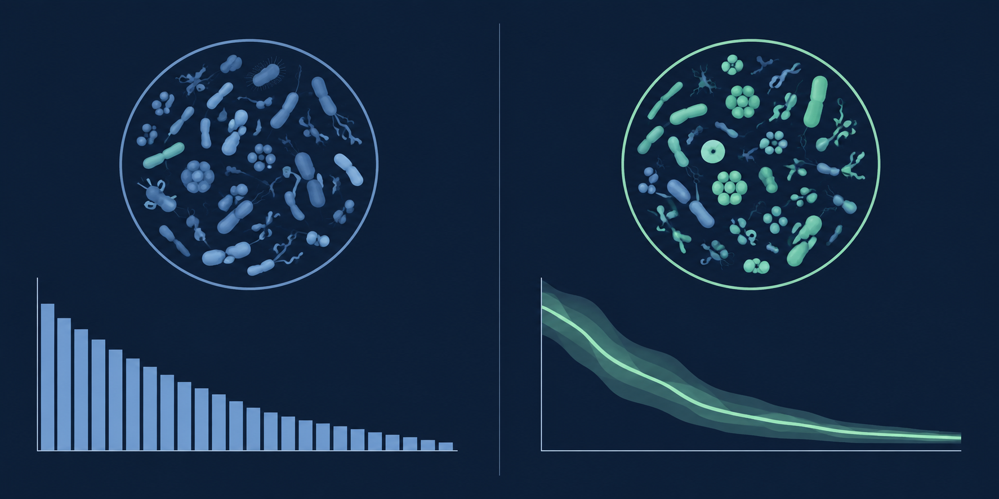

Start with a profile
Upload relative-abundance data from a microbiome sample, along with basic demographic inputs.
TEAM 24 · PERSONALIZED MICROBIOME REFERENCE
Microbiome reports often compare everyone with the same average. GutMap 24 makes the comparison more relevant: a healthy reference adjusted for age, sex, and BMI, with uncertainty shown alongside each result.
Research prototype · Not a clinical diagnostic tool
Illustrative layout; not a patient result.
01 / THE PROMISE
We turn a long list of microbial abundances into a clear, person-specific comparison. For doctors, gastroenterologists, and nutritionists, a visible reference and uncertainty estimate can make a report easier to scrutinize instead of asking them to trust an unexplained “normal” range.
02 / THE SECRET SAUCE
Our model learns from healthy adult stool samples and estimates the expected microbiome composition for someone with the same age, sex, and BMI. It then compares an individual profile with that conditional reference, species by species.

Upload relative-abundance data from a microbiome sample, along with basic demographic inputs.
Estimate a healthy reference adjusted for age, sex, and BMI—not a single fixed range for everyone.
Highlight species above or below their reference and show uncertainty from out-of-study validation.
03 / SEE IT WORK
Open the interactive research prototype, load the included cMD3 example, and see how an observed profile is compared with its personalized reference. No sample file needed to explore the demo.
Open the prototypeExplore the model with a de-identified example profile.
04 / WHY BELIEVE IT
A 2025 international consensus statement in The Lancet Gastroenterology & Hepatology cautioned that many commercial microbiome tests have no proven clinical value and that clinicians often lack guidance for interpreting them. That skepticism is reasonable.
GutMap 24 replaces a one-size-fits-all population comparison with a healthy reference conditional on age, sex, and BMI. It shows species-level differences and uncertainty from study-grouped validation. This is designed to support more transparent interpretation, not to claim that the test is clinically reliable already.
The current model is a reproducible research pipeline based on cMD3 profiles. It does not fix sample collection or sequencing quality, and external validation on fully unseen studies and prospective testing are still needed before clinical claims. These figures describe the research dataset, not customer traction or clinical outcomes.
05 / TAKE THE NEXT STEP
Explore the example profile and the comparison it produces.
Try the research prototypeFREE TRIAL
Leave your email and any question or comment. This is a preview of the request form; messages are not sent yet.